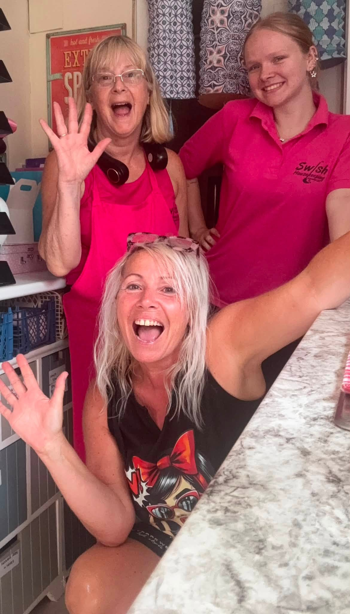

S
Cleaning
Regular home cleaning, housekeeping, holiday lets and commercial spaces.
Swish helps local households and businesses with cleaning, ironing, errands and practical home help. Friendly, dependable support from Sarah and a local team who genuinely care about the people they work with.

A quick overview here — the full detail is on our Services page.
Regular home cleaning, housekeeping, holiday lets and commercial spaces.
Ironing jobs completed and returned, taking another task off your list.
Shopping, collections, deliveries and other practical jobs where we can help.
Practical support and companionship that can help people stay independent.

Swish uses professional cleaning products and has COSHH training and product data sheets in place. The team is insured, DBS checked and works with discretion in customers’ homes and workplaces.
That professional approach sits alongside what Swish is known for locally: friendly people, plenty of energy and a service that feels personal.
The team had the chance to work on the set of the TV series Bergerac — a very different Swish job and one the team was proud to be part of.
From cleaning the marquee to helping with the parade, the Swishers got properly involved in carnival week.
Alongside homes, the team also supported offices, a theatre, a salon, village hall, holiday lets, farms and other local businesses.
A short Facebook reel showing one of the team’s recent jobs. If the video does not load in your browser, use the link underneath to open it on Facebook.
Watch the reel on FacebookTell Sarah what you need and she’ll let you know how Swish can help.